Практическая работа №3.1. Django Web framework. Запросы и их выполнение
Практическое задание 1: Напишите запрос на создание 6-7 новых автовладельцев и 5-6 автомобилей, каждому автовладельцу назначьте удостоверение и от 1 до 3 автомобилей. Задание можете выполнить либо в интерактивном режиме интерпретатора, либо в отдельном python-файле. Результатом должны стать запросы и отображение созданных объектов. Если вы добавляете автомобили владельцу через метод .add(), не забудьте заполнить также ассоциативную сущность “владение”.
Выполнение задания:
Настройка окружения
1) Для начала я перешла в директорию, где находится manage.py:
cd /Users/dariapolyakova/PycharmProjects/Daria_Django/django_project_poliakova
2) Далее активировала виртуальное окружение:
source /Users/dariapolyakova/PycharmProjects/Daria_Django/tutorial-env/bin/activate
3) Запустила команду для открытия Django shell:
python manage.py shell
Работа в shell
1) Импортируем модули
from project_first_app.models import CarOwner, Car, Ownership, DriversLicense
2) Посмотрим какие username есть сейчас в нашей бд
 3) Создадим 6 новых автовладельцев при помощи запросов
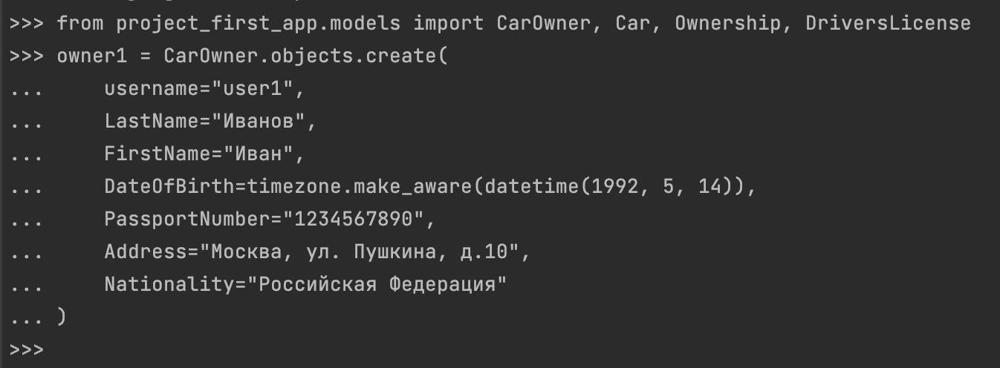
4) Проверим добавились ли наши юзеры
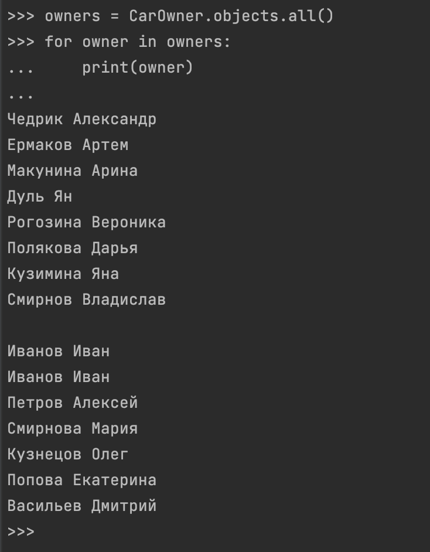
5) Посмотрим какие есть сейчас машины в бд
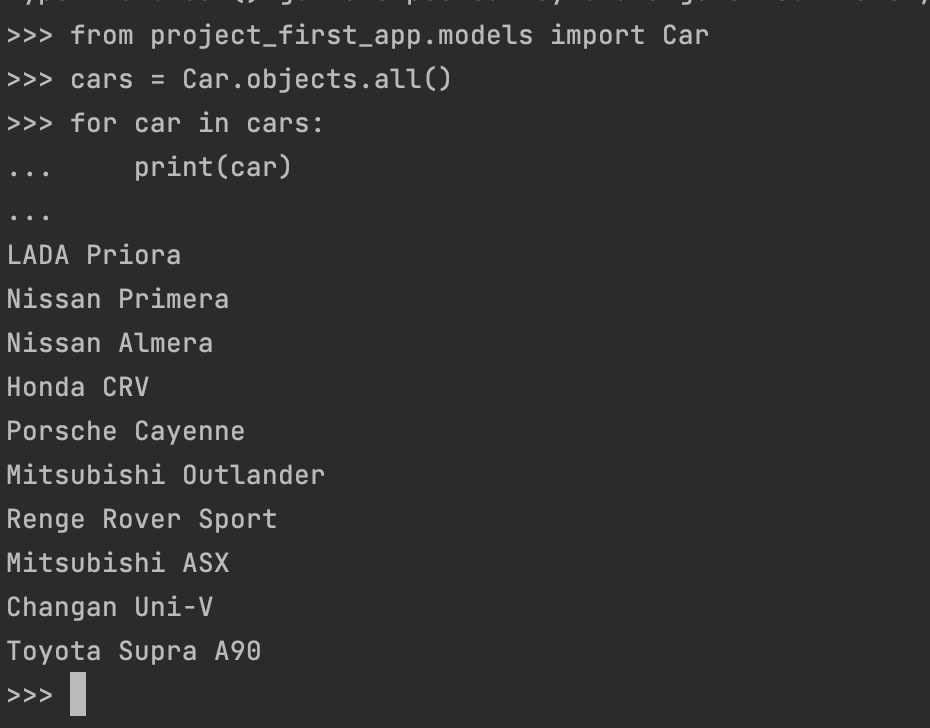
6) Добавим новых 5 машин через запросы
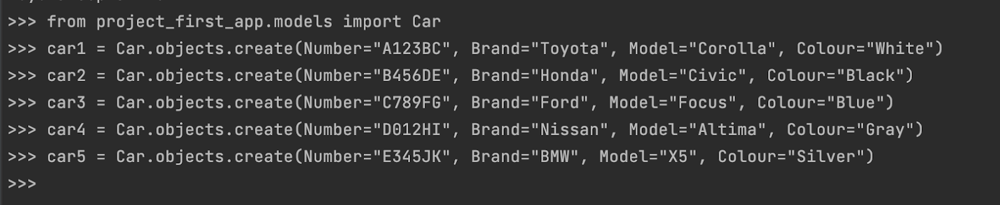
7) Проверим добавились ли они
3) Создадим 6 новых автовладельцев при помощи запросов
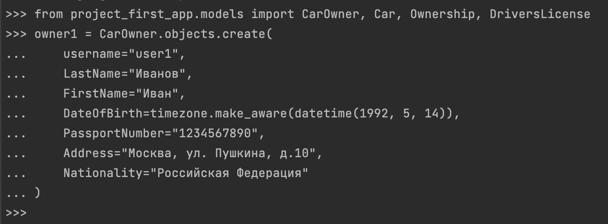
4) Проверим добавились ли наши юзеры
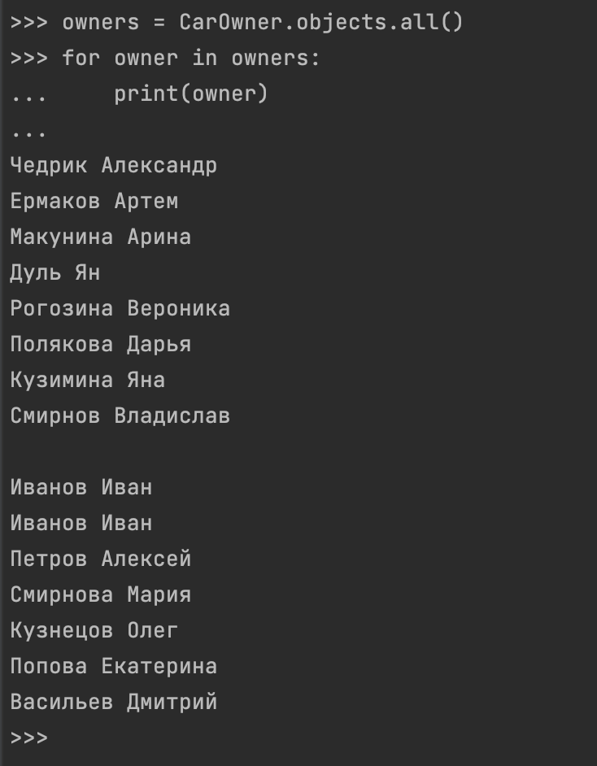
5) Посмотрим какие есть сейчас машины в бд
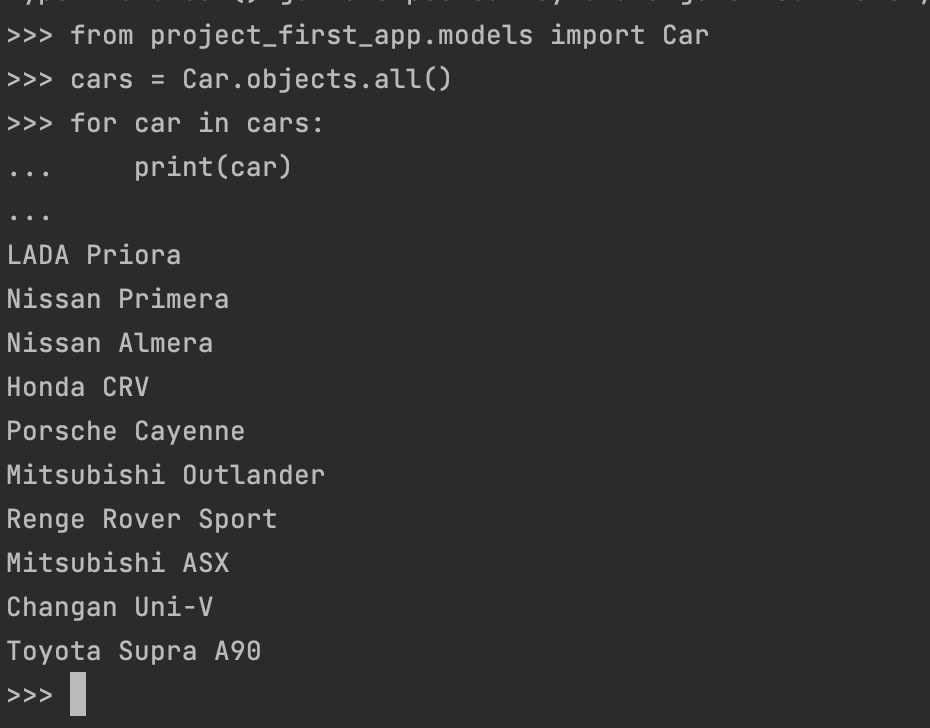
6) Добавим новых 5 машин через запросы
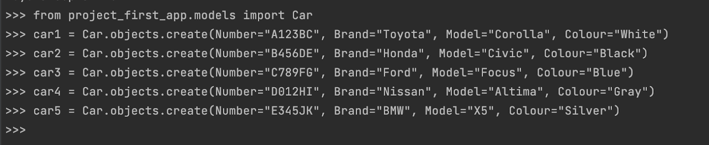
7) Проверим добавились ли они
 8) Посмотрим какие есть лицензии в моей бд
8) Посмотрим какие есть лицензии в моей бд
 9) И понимаем, что пока что ни родной лицензии нет. Каждому автовладельцу назначим удостоверение
9) И понимаем, что пока что ни родной лицензии нет. Каждому автовладельцу назначим удостоверение
 10) Проверим бд удостоверений
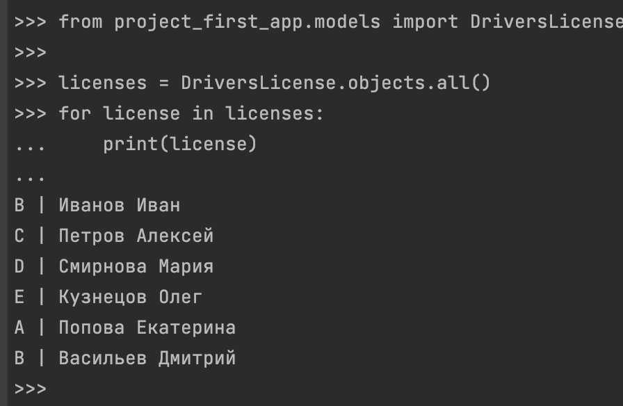
11) Теперь присвоим авто юзерам
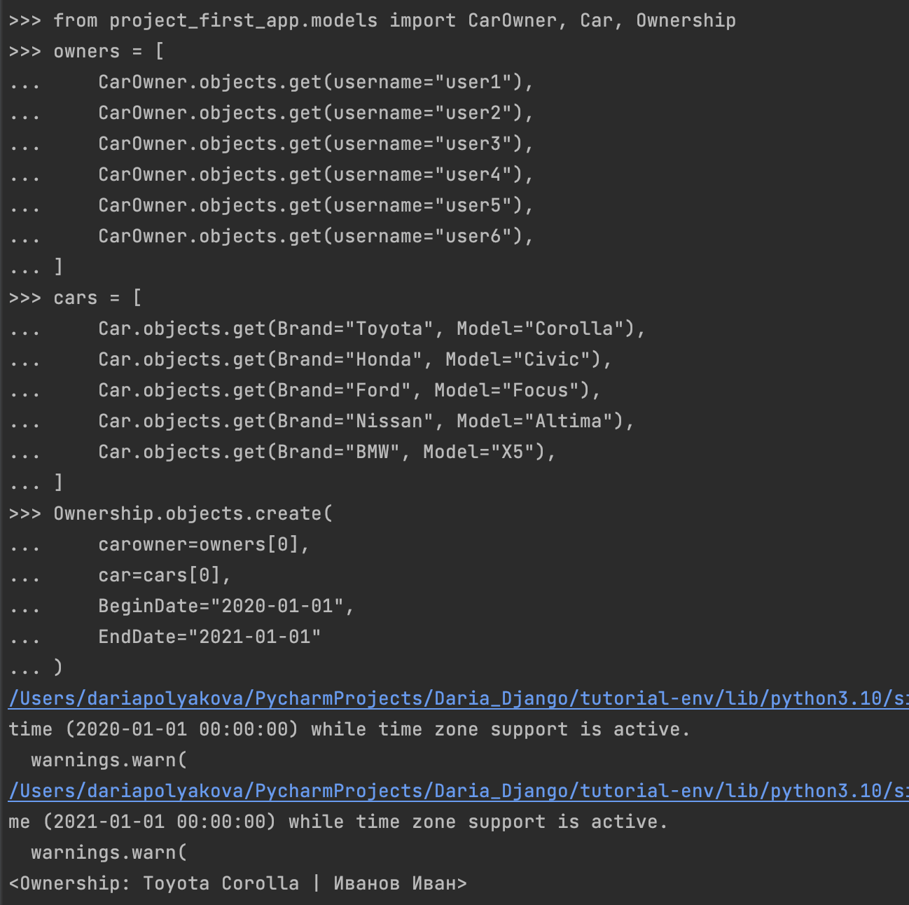
12) Теперь владения авто выглядит так:
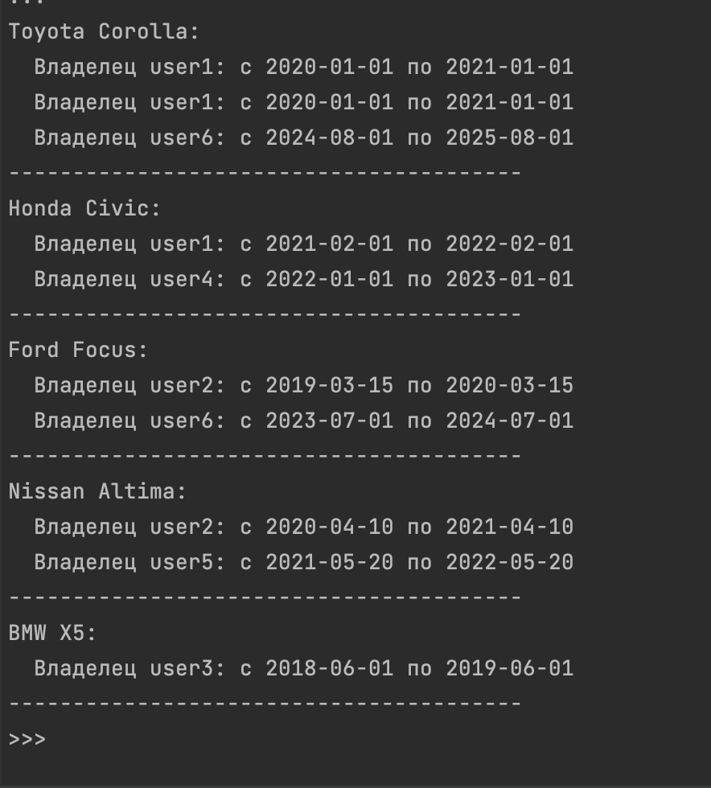
10) Проверим бд удостоверений
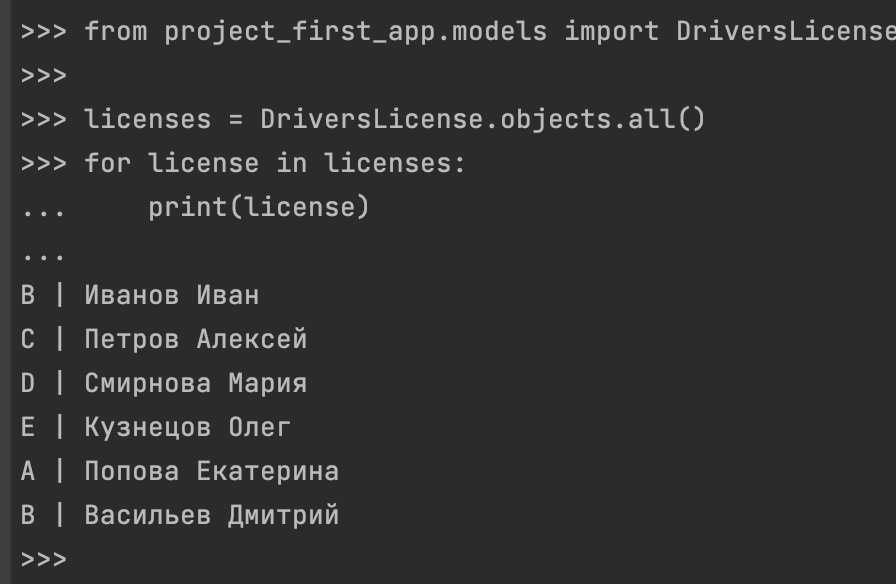
11) Теперь присвоим авто юзерам
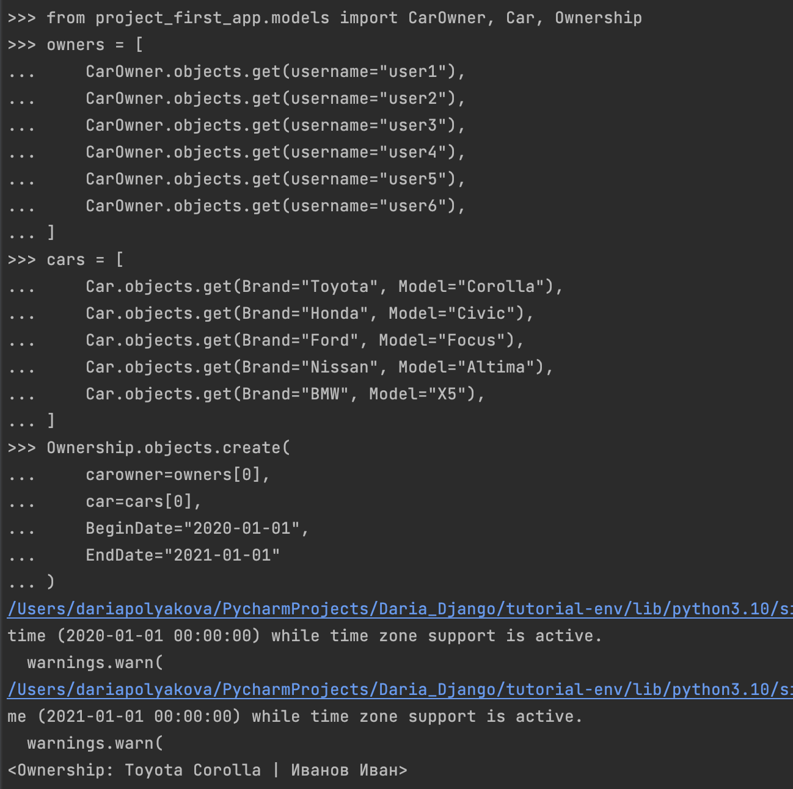
12) Теперь владения авто выглядит так:
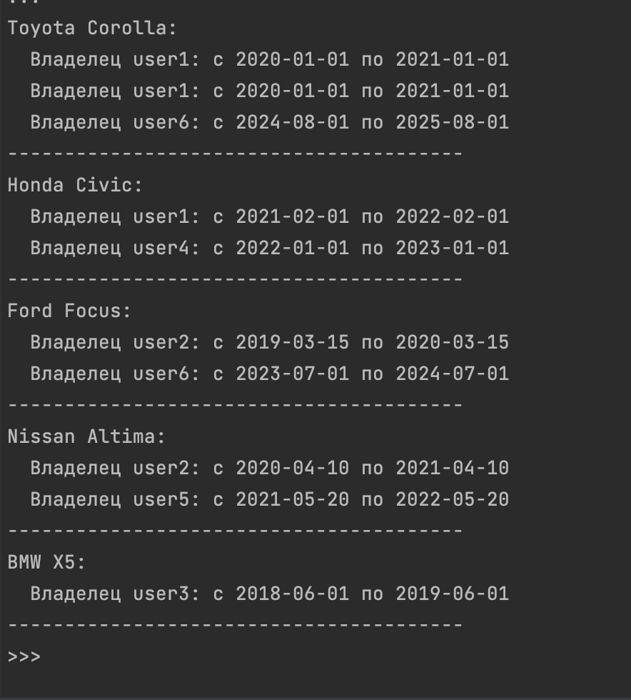
Практическое задание 2: По созданным в пр.1 данным написать следующие запросы на фильтрацию:
- Где это необходимо, добавьте
related_nameк полям модели - Выведите все машины марки "Toyota" (или любой другой марки, которая у вас есть)
- Найти всех водителей с именем "Олег" (или любым другим именем на ваше усмотрение)
- Взяв любого случайного владельца, получить его
id, и по этомуidполучить экземпляр удостоверения в виде объекта модели (можно в 2 запроса) - Вывести всех владельцев красных машин (или любого другого цвета, который у вас присутствует)
- Найти всех владельцев, чей год владения машиной начинается с 2010 (или любой другой год, который присутствует у вас в базе)
Выполнение задания:
1) Выведете все машины марки “Toyota” (или любой другой марки, которая у вас есть): 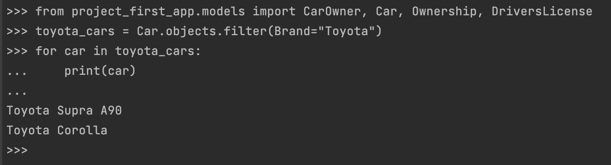 2) Найти всех водителей с именем “Олег” (или любым другим именем на ваше усмотрение): 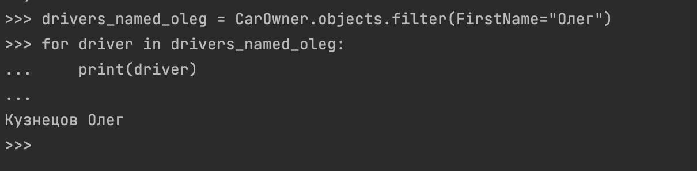 3) Взяв любого случайного владельца получить его id, и по этому id получить экземпляр удостоверения в виде объекта модели (можно в 2 запроса): 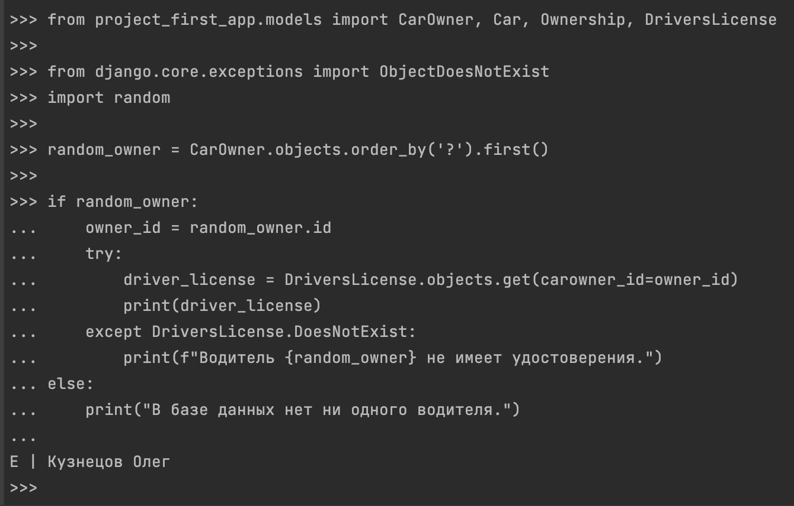 4) Вывести всех владельцев красных машин (или любого другого цвета, который у вас присутствует): 5) Найти всех владельцев, чей год владения машиной начинается с 2010 (или любой другой год, который присутствует у вас в базе):
Практическое задание 3:
Необходимо реализовать следующие запросы с применением описанных методов:
- Вывод даты выдачи самого старшего водительского удостоверения
- Укажите самую позднюю дату владения машиной, имеющую какую-то из существующих моделей в вашей базе
- Выведите количество машин для каждого водителя
- Подсчитайте количество машин каждой марки
- Отсортируйте всех автовладельцев по дате выдачи удостоверения
(Примечание: чтобы не выводить несколько раз одни и те же таблицы воспользуйтесь методом.distinct())
Выполнение задания:
1) Вывод даты выдачи самого старшего водительского удостоверения 2) Укажите самую позднюю дату владения машиной, имеющую какую-то из существующих моделей в вашей базе 3) Выведите количество машин для каждого водителя 4) Подсчитайте количество машин каждой марки 5) Отсортируйте всех автовладельцев по дате выдачи удостоверения (Примечание: чтобы не выводить несколько раз одни и те же таблицы воспользуйтесь методом .distinct()). Для выполнения этого пункта я добавила related_name='licenses' в класс DriversLicense(models.Model).